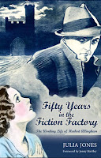
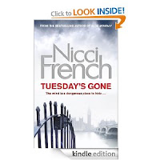
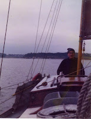
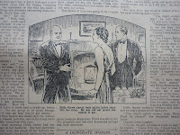

Clicking

impatiently through your e-reader to plunge into Tuesday's Gone, the latest Nicci French novel, you are unlikely to pause any longer than a thumb-twitch over the page which says 'To Francis and Julia'. Why should you? You're in a hurry. You almost certainly read Blue Monday, the first in the Frieda Klein series, and gasped in horror at that novel's final twist. You, the reader, know something vital which neither the heroine nor the police have any suspicion. Even the widow does not know who's dead. But you do. And that means you also know who's been left alive. You need to know what happens next.I, on the other hand, have bought the book in both formats. The electronic version will travel with me in my handbag; the chunky hardback stays at home for both of us to savour those four words on that creamy bookwove page: 'To Francis and Julia'.
It's a dedication. Such a surprising, gratifying, humbling, mystifying, heart-warming public/private declaration of friendship. It's not an acknowledgement. Neither Francis (my partner) or I made any contribution to the writing of Tuesday's Gone. There might have been some desultory discussion of song-titles linked to days of the week as we sat round eating lemon drizzle cake with our friends Nicci Gerrard and Sean French but I'm sure the book was already completed and named by then. The true long-running mystery in the Nicci French oeuvre is when their creators find the time to produce them. Fourteen full-length psychological thrillers in the last fifteen years plus short stories, a play, regular journalism and several novels published by both partners separately. There are also four children, a lovely house and garden, a cherished extended family in both Sweden and England and the generous nurturing of many friends.
The reason we were eating Nicci's homemade lemon drizzle cake, as I remember, was that Francis and I spent mid-winter last year under health-imposed house-arrest. He'd had a second back operation and wasn't allowed to sit, lie or stand for more than fifteen minutes at a time. The surgeon had imposed a complete no-no to cars, trains, buses and I wasn't going anywhere either as I'd fragmented my leg doing nothing more exciting than carrying laundry downstairs. 'We really must clean-up our bedroom before you go into hospital, darling. What if a doctor or nurse should happen to call?' Crash.
Apart from the 
{kind=link}
It took me several long dog-walks (yes the leg's quite recovered, thank you) to feel that I'd made the right dedication choice for my next book, Fifty Years in the Fiction Factory: the working life of Herbert Allingham. Of course I was always going to dedicate it to my 'patron', Joyce Allingham, who left me the sixteen archive boxes of her father's papers on which the research was based. I'd already dedicated a book to Joyce - my biography of her older sister, Margery Allingham, the detective novelist. That dedication was shared with Christina, Margery's housekeeper and Gloria, Margery's secretary. Collectively they had made me so welcome as I sat day after day, reading and making notes in the little gallery room where Margery had worked in the last days of her life. That dedication was no more that their due – I hoped they would be pleased by it.
All we ll and good but … Joyce has been dead for more than nine years now and I'm not sure precisely how the book trade works in heaven. Should I supply her with a copy via scroll technology, illumination, tablet of stone or icloud? And another thing. Before Joyce owned the boxes and passed them to me, it was Margery, who had grieved for their father, believed in his life's work and kept his stories safe. Margery was the one who packed up the papers but Margery's been dead even longer.
ll and good but … Joyce has been dead for more than nine years now and I'm not sure precisely how the book trade works in heaven. Should I supply her with a copy via scroll technology, illumination, tablet of stone or icloud? And another thing. Before Joyce owned the boxes and passed them to me, it was Margery, who had grieved for their father, believed in his life's work and kept his stories safe. Margery was the one who packed up the papers but Margery's been dead even longer.
I think that the essence of a dedication is that it should attempt to please somebody - so why have I added my own father's name to the dedication page? He died when I was still running my bookshop, before I'd written a word of anything. I'm not sure he'd even have been especially interested in the subject matter of Fifty Years. Surely one of the sailing adventures would have been a more appropriate choice? 
{kind=link}
Except that … of course Dad would have been interested in Herbert Allingham's biography simply because it was mine and I would have been going on about it breakfast, lunch, tea and supper. (I nearly dedicated the book to All the Families of Obsessives Everywhere.) Dad always had some project on – or some crusade, more likely. I remember when I was a teenager meanly trying to sneak past his office door when I came home from the pub or some party. Not because he'd ask me where I'd been or grumble about whatever ridiculous get-up I was flaunting but because he'd want to go on about the appalling idea of building an airport on the Maplin Sands, or explain once again what red-lead in anti-fouling paint was doing to the sex habits of East Coast oysters. That would be when he was banging out his regular column for Yachting Monthly magazine. (They were invariably late-night, last minute efforts – just like this AE blogpost.) Or he might be framing one of his sweetly amateur water-colour paintings and want to show me that. Another night some BBC programme might have infuriated him or a Handel organ concerto delighted him. But all I'd be trying to do was sneak off to my bed. So, belatedly, I'm offering Fifty Years in the Fiction Factory as a secret souvenir of daughter-father love. 
{kind=link}
Nicci and Sean delighted two people with their dedication to Tuesday's Gone. I'm only pleasing one and that's myself. No-one else need waste a moment. I want you to read on.